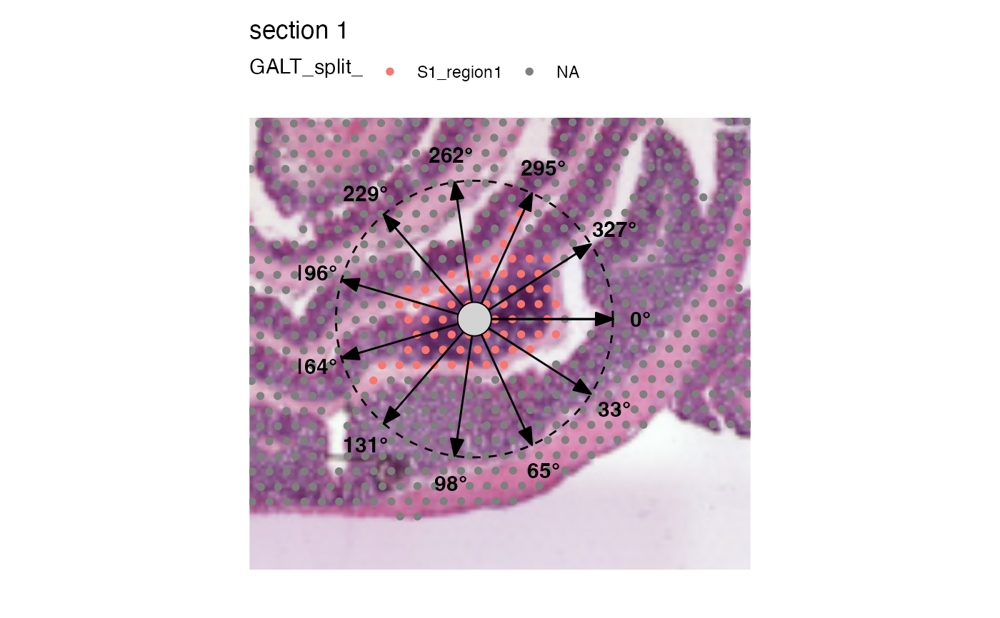

Angle plot
AnglePlot.RdDraws on angle plot on top of a selected region. The plot is meant to help
defining angle intervals for computing radial distances with RadialDistance.
Usage
AnglePlot(
object,
column_name,
selected_group,
radius = 0.3,
nbreaks = 9,
centroid_size = 8,
image_use = NULL,
coords_use = "raw",
crop_area = NULL,
pt_size = 1,
pt_alpha = 1,
pt_stroke = 0,
section_number = NULL,
label_by = NULL,
ncol = NULL,
colors = NULL,
override_plot_dims = FALSE,
drop_na = FALSE,
...
)Arguments
- object
An object of class `Seurat`
- column_name
a string specifying a meta data column holding the categorical feature vector
- selected_group
A label defining a group of spots found in a column of the meta data slot specified by
column_name- radius
A numeric value between 0.1 and 1 specifying the size of the "angle plot" overlaid on the spatial plot.
- nbreaks
Number of intervals to cut the angles into
- centroid_size
Size of the centroid spot
- image_use
string specifying image type to use
- coords_use
string specifying coordinate type to use
- crop_area
a numeric vector of length 4 specifying a rectangular area to crop the plots by. These numbers should be within 0-1. The x-axis is goes from left=0 to right=1 and the y axis is goes from top=0 to bottom=1. The order of the values are specified as follows:
crop_area = c(left, top, right, bottom). The crop area will be used on all tissue sections and cannot be set for each section individually. using crop areas of different sizes on different sections can lead to unwanted side effects as the point sizes will remain constant. In this case it is better to generate separate plots for different tissue sections.- pt_size
numeric value specifying the point size passed to
geom_point- pt_alpha
numeric value between 0 and 1 specifying the point opacity passed to
geom_point. A value of 0 will make the points completely transparent and a value of 1 will make the points completely opaque.- pt_stroke
numeric specifying the point stroke width
- section_number
an integer select a tissue section number to subset data by
- label_by
character of length 1 providing a column name in
objectwith labels that can be used to provide a title for each subplot. This column should have 1 label per tissue section. This can be useful when you need to provide more detailed information about your tissue sections.- ncol
integer value specifying the number of columns in the output patchwork.
- colors
a character vector of colors to use for the color scale. The number of colors should match the number of labels present.
- override_plot_dims
a logical specifying whether the image dimensions should be used to define the plot area. Setting
override_plot_dimscan be useful in situations where the tissue section only covers a small fraction of the capture area, which will create a lot of white space in the plots. The same effect can be achieved with thecrop_areabut the crop area is instead determined directly from the data.- drop_na
a logical specifying if NA values should be dropped
- ...
Arguments passed to other methods
Details
The region of interest is selected with selected_group and has to be a group
of a categorical variable selected with column_name which is stored in the
meta data of the input Seurat object. The selected region has to be spatially connected.
See also
Other spatial-visualization-methods:
FeatureViewer(),
ImagePlot(),
MapFeaturesSummary(),
MapFeatures(),
MapLabelsSummary(),
MapLabels(),
MapMultipleFeatures()
Examples
library(semla)
se_mcolon <- readRDS(system.file("extdata/mousecolon", "se_mcolon", package = "semla"))
se_mcolon <- DisconnectRegions(se_mcolon, column_name = "selection", select_groups = "GALT")
#> ℹ Extracting disconnected components for group 'GALT'
#> ℹ Detecting disconnected regions for 106 spots
#> Loading required namespace: tidygraph
#> ℹ Found 8 disconnected graph(s) in data
#> ℹ Sorting disconnected regions by decreasing size
#> ℹ Found 12 singletons in data
#> → These will be labeled as 'singletons'
se_mcolon <- LoadImages(se_mcolon)
#>
#> ── Loading H&E images ──
#>
#> ℹ Loading image from /Users/ludviglarsson/miniconda3/envs/R4.2/lib/R/library/semla/extdata/mousecolon/spatial/tissue_hires_image.jpg
#> ℹ Scaled image from 1804x2000 to 400x443 pixels
#> ℹ Saving loaded H&E images as 'rasters' in Seurat object
AnglePlot(se_mcolon, column_name = "GALT_split", selected_group = "S1_region1", pt_size = 2,
image_use = "raw", crop_area = c(0.4, 0.5, 0.7, 0.8), radius = 0.4, nbreaks = 12)
